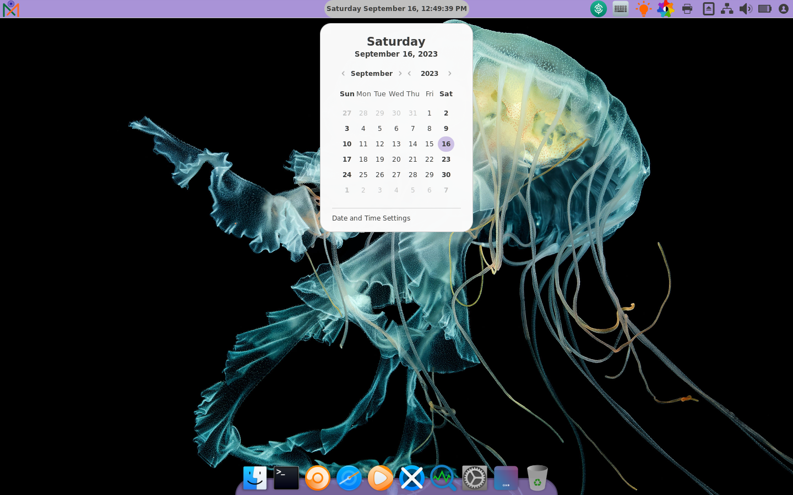
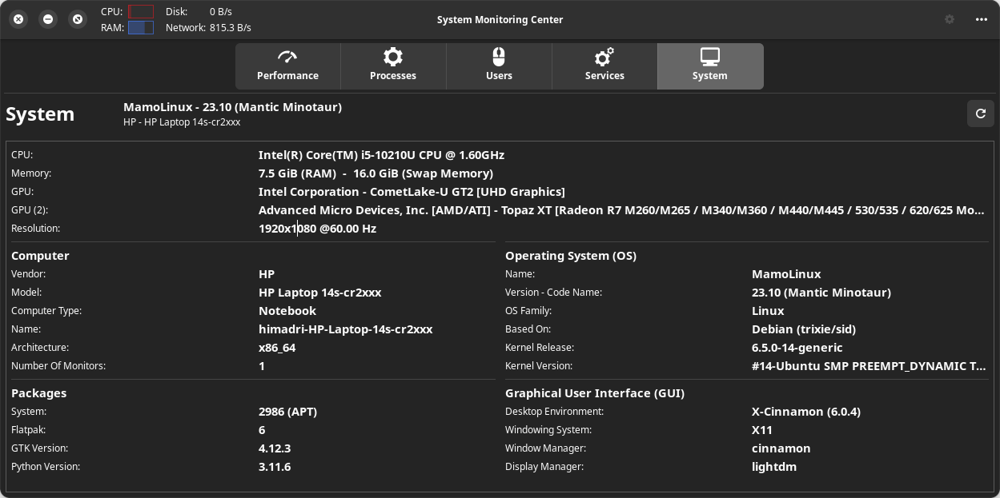
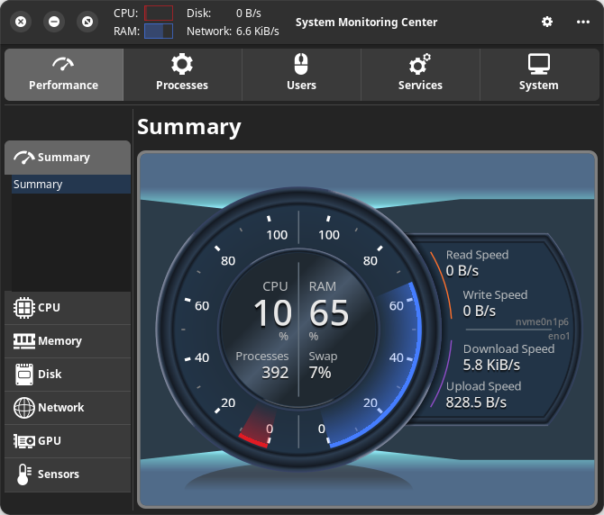
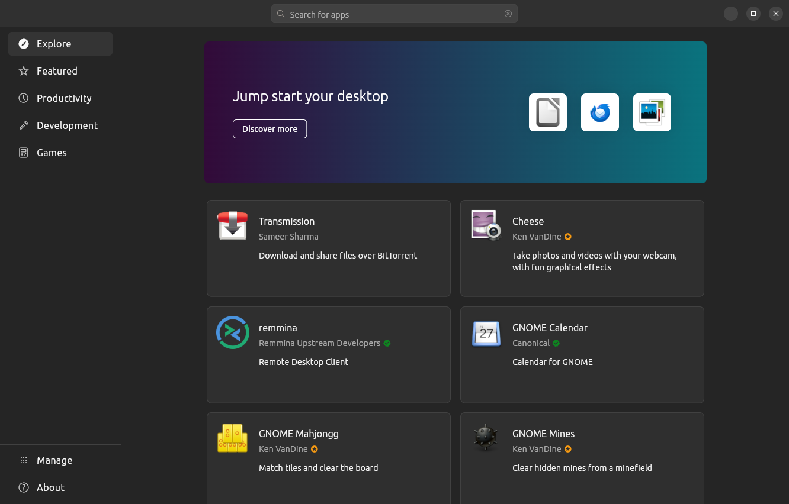

Information
- Size: 3.1 GB (3,08,31,90,272 bytes)
- Installation Guide
- Release Announcement
- Release Notes
- Sha256: 8065f53e323f58574164ceba2210b8e709d992a2c57e2506d90f7acc140bc117
- Torrent Download: 64-bit
- Download MamoLinux 23.10 amd64
- Download MamoLinux 23.10 amd64 (Google Drive)

Information
- Size: 4.4 GB (4,40,42,28,096 bytes)
- Installation Guide
- Release Announcement
- Release Notes
- Sha256: 92e427aacf852664b6eaa20d349b434f6edec6d31985ca8ca1b81953b6ac7a4c
- Torrent Download: 64-bit
- Download MamoLinux 22.04.3 LTS amd64 (.iso)
- Download MamoLinux 22.04.3 LTS amd64 (Google Drive)
  
### Recommened GUI Apps 1. [Battery Monitor](https://github.com/hsbasu/battery-monitor) (Monitors laptop battery) 2. [LeapTime Manager](https://github.com/hsbasu/leaptime-manager) (Aiming to be an all-in-one backup manager) 3. [Simple Password Generator](https://github.com/hsbasu/simple-pwgen) 4. [Theme Manager](https://github.com/hsbasu/theme-manager) (Pre-installed) ## Contributors ### [Himadri Sekhar Basu](https://hsbasu.github.io) Current Maintainer. ## Donations I am a freelance programmer. So, If you like this OS and would like to offer me a coffee ( ☕ ) to motivate me further, you can do so via: